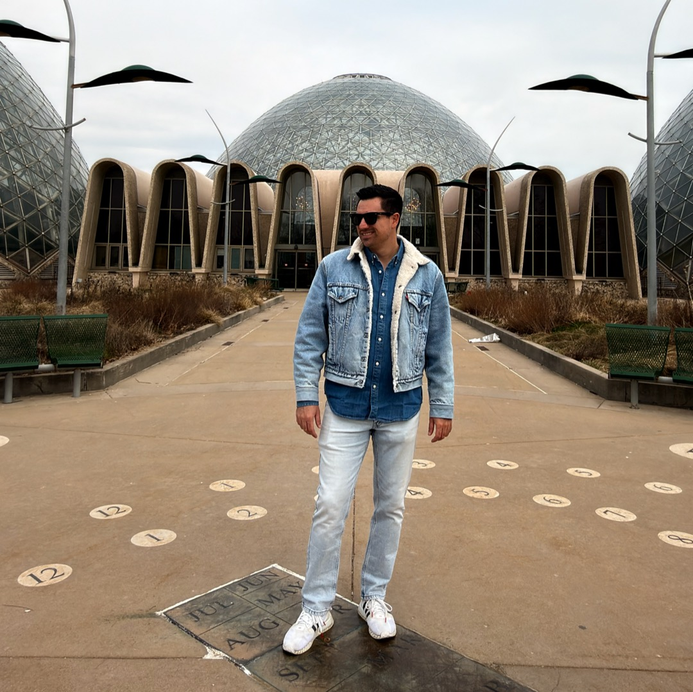

AI systems that compound into an advantage your competitors cannot copy.
MOAT Studio helps expert-led businesses improve internal performance with AI systems built around their own workflows and knowledge—then, where privacy, data control or independence matters, deploy them on infrastructure they control.
Built on your ground, handed back to you
Most AI makes you faster. A system built around your own workflow, judgment and knowledge makes you harder to copy. We are vendor-neutral: no reseller margin, no platform to defend, and the right tool for the workflow — including none at all.
What we build sits inside your operating reality: your recurring internal work, your systems of record, your quality bar, rather than a template rolled out sideways. Then we hand it over. Your team runs it when we’re done, because dependency on a consultant is the opposite of a moat.
Three steps. You own the output of each.
Identify performance opportunities and classify each by data sensitivity, integration need, reliability requirement and fit for cloud, hybrid or local deployment.
Implement the selected workflow against your real systems, with the deployment path chosen in the Map.
Monitor, improve and retain control — or equip your team to run it themselves and step away.

I amfrancisco
MOAT Studio was founded to help expert-led businesses build AI systems around their own workflows and knowledge — not the other way around.
Technical co-founder of Paradise Bunker, an autonomous operations platform. Builder of systems that run without constant oversight. Based in Brisbane, Australia.
franciscovarisco.com • linkedin.com/in/xicovariscoBecome uncopyable.
Tell us what you're trying to change. We'll tell you whether there's a useful first move.